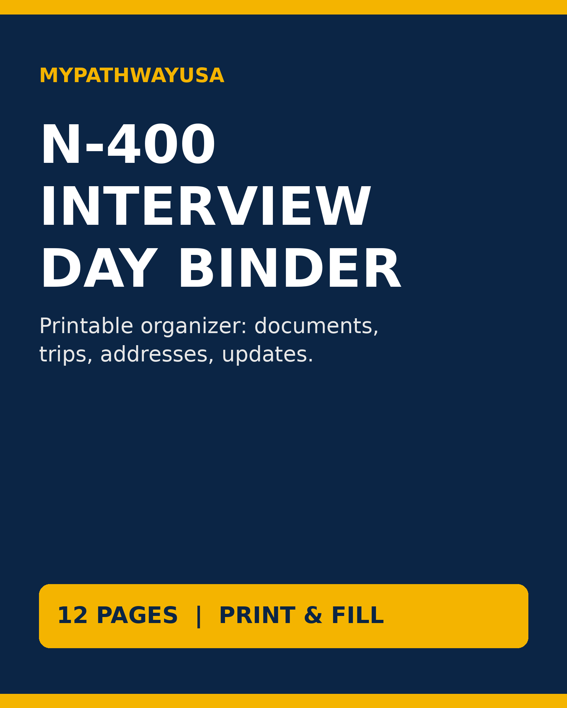

A printable, fill-in binder that helps you organize the documents, trips, addresses and updates USCIS asks about at the naturalization interview - built only from official USCIS checklists.
Free first: practice with our free interview guides. The binder is the paperwork organizer that goes with them.
